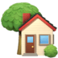

загородная жизнь
с альпийской культурой
B настоящее время загородная (сельская) усадьба – это обширная и структурно сложная типологическая группа объектов, которые имеют свою классификацию по функциональным признакам. Апробированы на практике и предложены населению модели домовладения усадебного типа:
- усадьба сельского жителя;
- усадьба фермерского хозяйства;
- усадьба как второе жильё гражданина.
В первую очередь, говоря о современной загородной усадьбе, обращаемся к традиционным сельским усадьбам, призванным удовлетворить потребности проживающей в ней семьи, а именно в сельскохозяйственной продукции разного типа с возможной продажей образующихся излишков и т.д. Сегодня подавляющее большинство усадеб являются сельскими. Компактность планировки способствует экономии средств на прокладке дорог и инженерных сетей, в том числе и при использовании новых «зелёных» технологий, что является ведущим принципом организации современного малого сельского поселения. Комплексный и многоотраслевой характер сельскохозяйственного производства в границах усадьбы удовлетворяет потребности семьи в продукции, обеспечивает безотходность и экологическую чистоту продукции и всей усадьбы, значительно сокращает энергозатраты на функционирование структуры усадьбы.
Загородное имение – это довольно обширный архитектурно – ландшафтный комплекс с развитой функциональной программой, где органично сочетаются жилая, хозяйственная и репрезентативная функции. Да, действительно сегодня в России появилась возможность строить комфортное жильё в предгорье и горах Алтая и жить в единении с природой, на своей земле!
+


Усадьба, как второе
жилище горожанина

Современная усадьба проектируется как единый производственно – селитебный комплекс с безотходной технологией, использованием альтернативных природных источников энергии, экологически чистых строительных материалов и систем инженерного обеспечения.
Современная усадьба проектируется как единый производственно – селитебный комплекс с безотходной технологией, использованием альтернативных природных источников энергии, экологически чистых строительных материалов и систем инженерного обеспечения.
Необходимо выделить в отдельную группу такой своеобразный тип загородной недвижимости, как резиденция. Резиденция является разновидностью дачи общественных лиц, организаций, творческой интеллигенции и т.д. В последние годы в секторе элитного загородного жилья формируется новый тип – загородное имение с примыкающим к нему приусадебным хозяйством индивидуального назначения. Отметим, что имеется ввиду жильё премиум класса, которое принадлежит людям, проживающим на природе, но по роду своей деятельности связанным с городскими мегаполисами, с источником дохода никак не связанным с функционированием подсобного хозяйства имения. В данной модели загородного имения подсобное хозяйство обслуживается персоналом постоянно проживающим на территории фермы в секторе включенном в объёмно – планировочную структуру усадьбы (имения) в целом.
Поверти, покрути
Варианты для детального просмотра земельного участка
3D
360°
Симбиоз красоты и экологии

Дендрарий на собсвенном земельном участке – это не только уникальное украшение ландшафта, но и функциональное пространство, которое приносит множество преимуществ.
Живые коллекции редких и экзотических деревьев, кустарников, которые служат не только в качестве эстетического украшения участка, но и вносят значительный вклад в экологическое равновесие и биоразнообразие региона.
Промышленный дендрарий – инновационный подход к интеграции природы в промышленную среду. Участок может стать частью экологической стратегии предприятия, улучшая его имидж и вкладывая в будущее планеты, что в свою очередь улучшает экологию и энергоэффективность. Способствует биоразнообразию и социальной ответственности, а также создаёт рекреационное пространство для сотрудников, повышая их благополучие и производительность.
Гармония природы и дизайна

Дендрарий, оформленный в виде парка – это прекрасное место для отдыха и наслаждения природой, которое может стать украшением любого земельного участка.
Представьте себе парк, где каждая дорожка ведет к новому открытию. Это место, где можно не только насладиться красотой редких деревьев и кустарников, но и узнать много нового о них.
Такой парк станет не только местом для приятного времяпрепровождения, но и значительно повысит ценность и привлекательность земельного участка. Он станет жемчужиной вашей недвижимости, привлекая внимание и восхищение посетителей.
Концепция застройки

Мы предлагаем готовую архитектурную концепцию застройки земельного участка
Заполните форму и мы свяжемся с Вами
в ближайшее время.
Нажимая на кнопку, вы даёте согласие на обработку персональных данных